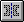

Symmetry Axis command
Use the Symmetry Axis command

to activate a line to use as a symmetry axis for the Symmetric command. The Symmetric command places selected elements symmetrically about the symmetry axis. If a symmetry axis is not active when you use the Symmetric command, you are asked to select a line to use as a symmetry axis.